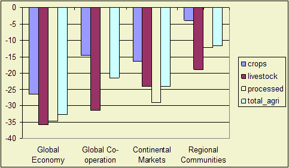
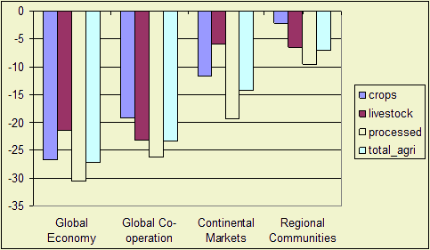

Highlights
Negative employment growth in agricultural sectors in EU25 (see also, figures
in the Employment indicator part). The decline in agricultural labour is higher
in EU12 than in EU15 (compare E1 with E2), although the share of agricultural
labour declines faster in the EU15 than in the EU12 (compare E3 and E4).
The decline in employment and especially the decline in the share of agricultural employment is highest in the scenarios with a high economic growth (Global Economy and Continental Markets).
The share stays highest in the regional communities scenario. In the B scenarios (Global Cooperation and Regional Communities) in the EU15 the drop in labour in the livestock sectors is striking and it is driven by the decline in preference for meat products in these scenarios.

Figure 1 - Agri-employment growth minus total employment
growth in EU15, period 2001-2030
Note: This graph indicates the development of the share of agricultural employment
in total employment. A negative number implies that the share declines.
Past developments
The decline of employment in the agricultural sector is a long term trend.
Future developments
The share of agricultural employment declines in all scenarios due to lower
production growth in these sectors and a higher labour productivity growth.
The decline is highest in the A1 scenario because labour productivity growth
is relatively high. High demand growth in the services sectors induces pressure
in the labour market and opportunities for people in other sectors. In the low
income growth Regional Communities (B2) scenario opportunities for agricultural employees outside
agriculture are limited and people stay within the agri-sectors.
Figure 2 - Agri-employment growth minus total employment
growth in EU15, period 2001-2030
Note: This graph indicates the development of the share of agricultural employment
in total employment. A negative number implies that the share declines.

Figure 3 - Agri-employment growth minus total employment
growth in EU12, period 2001-2030
Policy effects
Reducing the CAP policies leads to an increase of labour released from the agricultural
sector. The biofuel directive keeps more labour in the agricultural sector.
Most important drivers
Macro economic growth.
Used methodology
LEITAP model